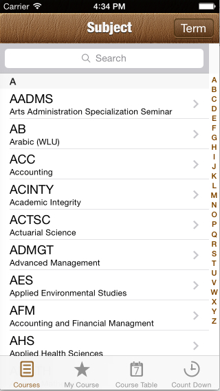
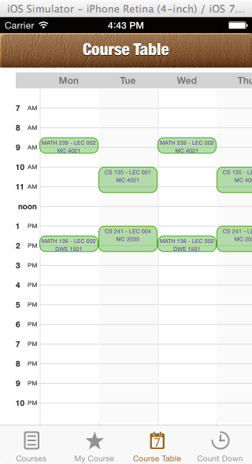
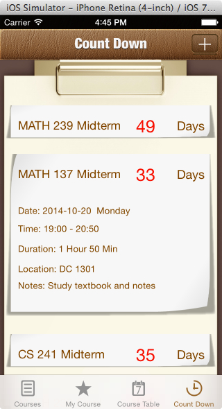
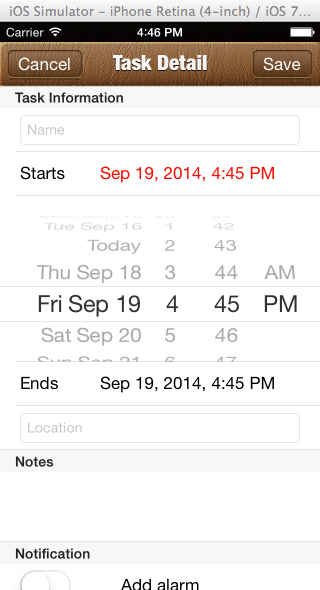
- On app store: https://itunes.apple.com/ca/app/uwcourses/id864114842?mt=8
- Developed an IOS app that allows the user to add UW courses and create a beautiful timetable
- Users can view detailed information about each course
- Automatically display exam and assignment countdowns in a user-friendly UI
- Used objective-c, core data, Event Kit, University of Waterloo public API
This was a web application project I did for my last coop work place, and is currently being used to make profits. It provides a more efficient way for inspector to obtain insurance related information about residential properties more efficiently.
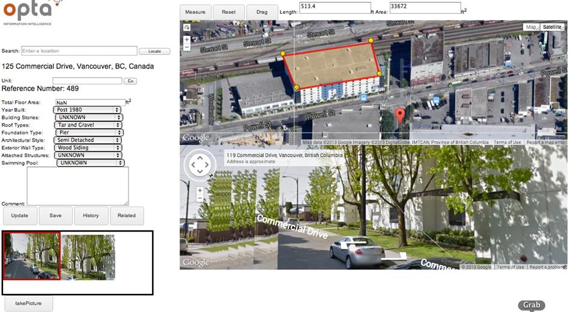
Features Includes:
- Easy-to-navigate Google Map and Google Streetview
- Capture static streetview images
- Drop-down list for recording property information
- Measure distance and area on the Google Map
- Edit image and write comments
- Save all of the data (location of the property, the characteristics of the property, images, comments) in a database
- View and edit saved information (pull data out from database)
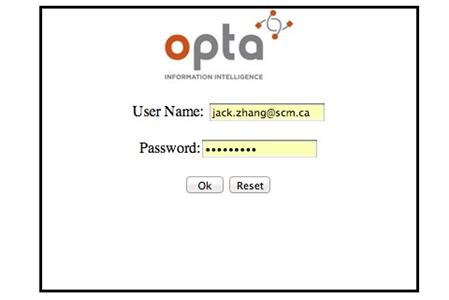
A login page that verifies user's identity based on the information in the database.
The mobile version of http://www.leadingindicator.ca/ site. Used HTML, Javascript, CSS, Bootstrap, Facebook API, and fetching JSON to obtain data.

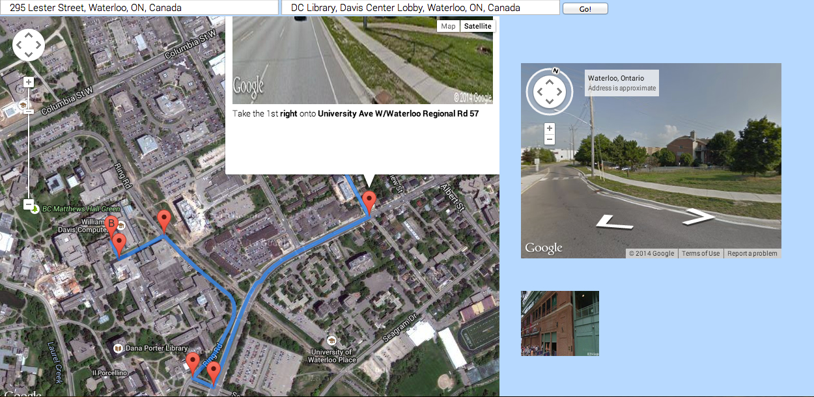
- http://miracle1949.github.io/tripplaner/
- Worked in a team of four and developed a web application that serves as a platform for travellers/li>
- Utilized MyoTM API allows users to control Google Map streetview and take pictures using gestures
- Used Yelp API to find local attractions
- Automatically displays a route with markers indicating turning points and streetview pictures
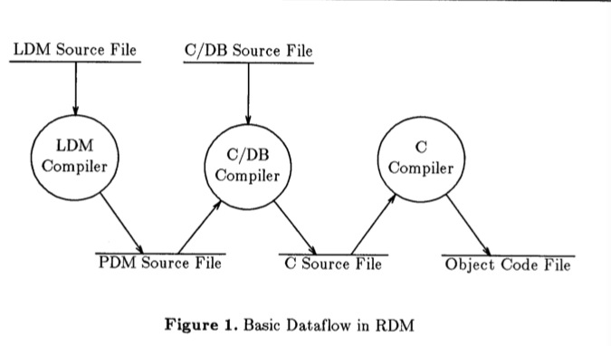
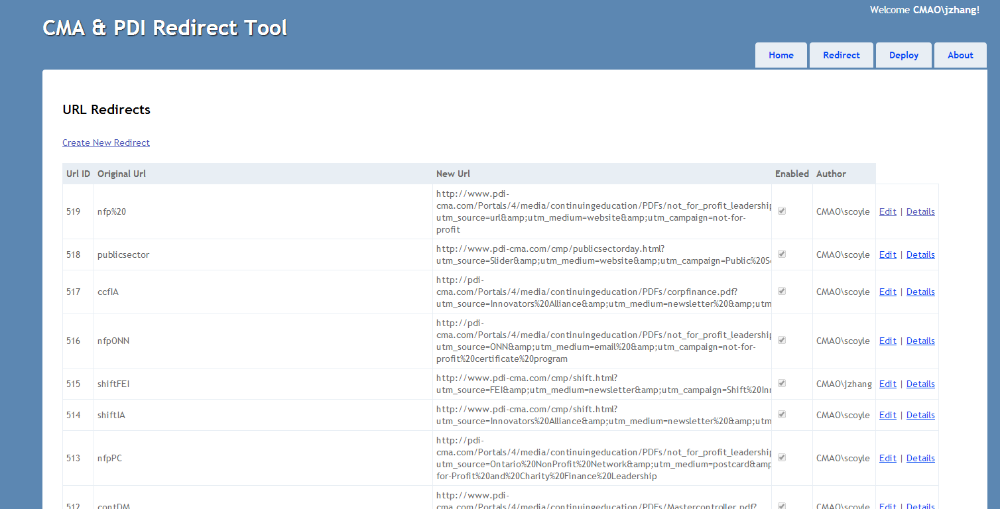
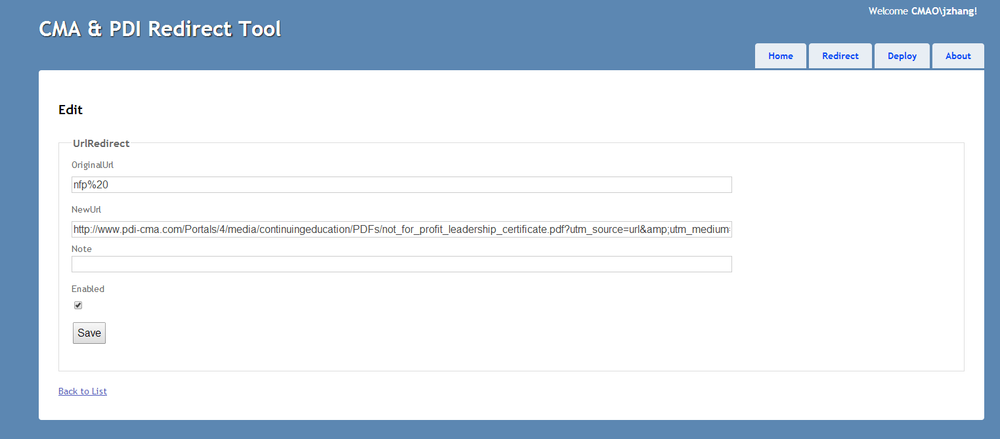
Add URL redirect to the cmaontario site. Search, edit, and delete redirect entries in the SQLServer
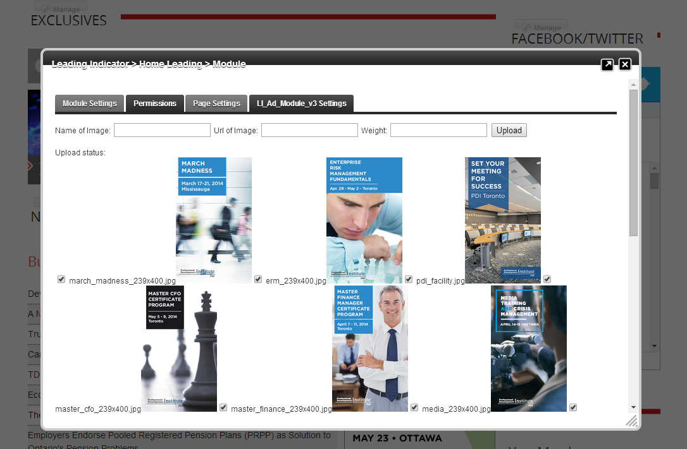
A DNN module that allow the users to easily add advertisement banner to Leading Indicator site with customized display frequency.
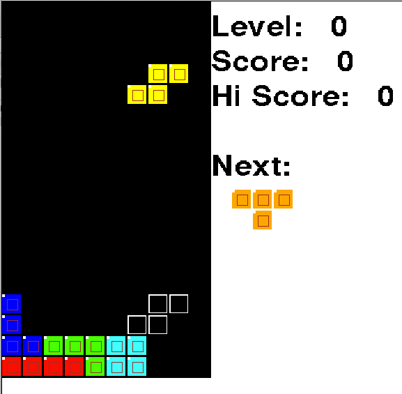
A Tetris game that is built in C++ strictly following OPP principal
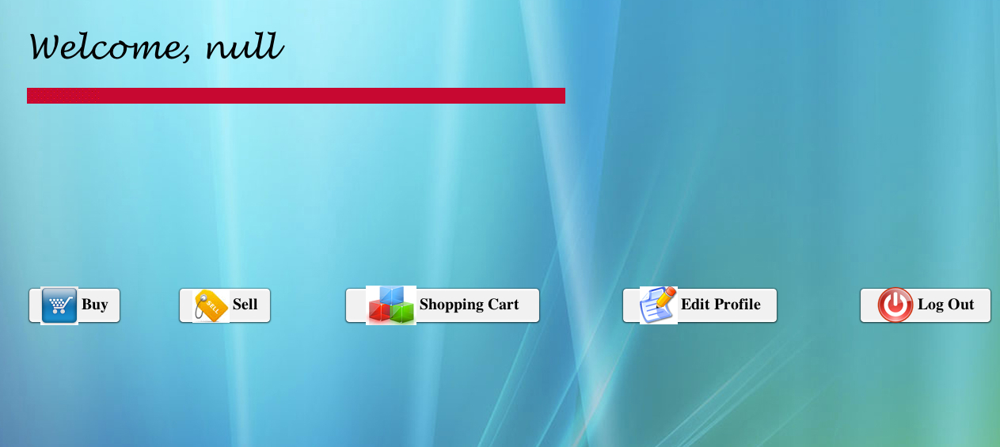
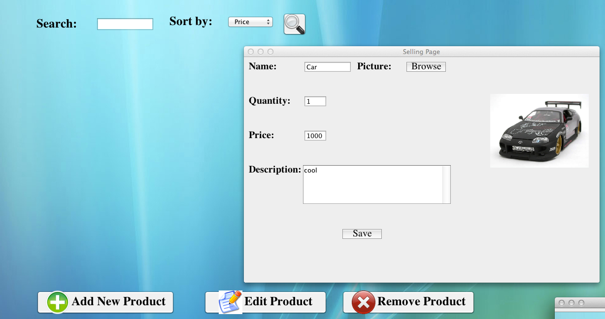
Developed simulation of online shopping system using Java and Received a 95% as the final mark.
Created user interface with data stored in database using Java and Access.
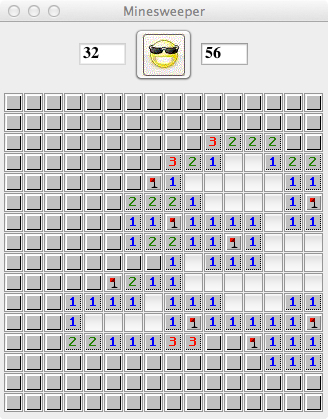
Developed the classic minesweeper game in Java. Utilized Java to create graphic user interface for the game.